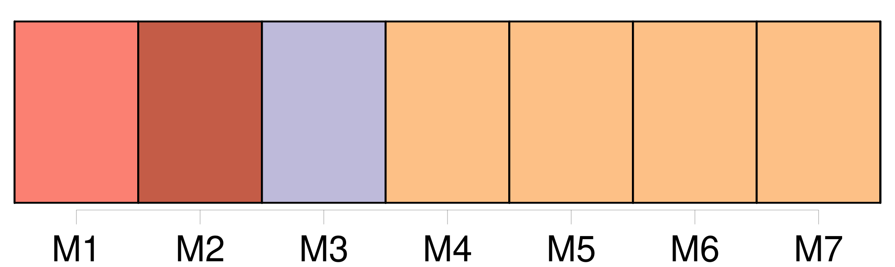
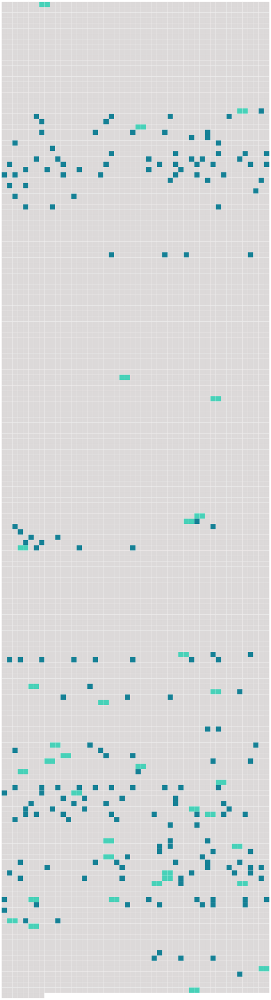

Longueur nb maillons : 224 mentions |
 |
Au total, onze enfants, dont [un seul] avait survécu. [37 phrases] Jean-Michel avait reporté ses ambitions sur [son fils] ; et [Melchior] promit d’ abord de les réaliser. [Il] avait, dès l’ enfance, de grands dons pour la musique. [Il] apprenait avec une facilité remarquable, et de bonne heure [il] acquit, comme violoniste, une virtuosité qui fit de [lui] pendant longtemps le favori, presque l’ idole des concerts de la cour. [Il] jouait aussi fort agréablement du piano et d’ autres instruments. [Il] était beau parleur, bien fait, quoiqu’ un peu lourd, – le type de ce qui passe en Allemagne pour la beauté classique : un large front inexpressif, de gros traits réguliers, et une barbe frisée : un Jupiter des bords du Rhin. Le vieux Jean-Michel savourait les succès de [son fils] ; il était en extase devant les tours de force du virtuose, lui qui n’ avait jamais su jouer proprement d’ aucun instrument. Ce n’ était certes pas [Melchior] qui eût été en peine pour exprimer ce qu’ [il] pensait. Le malheur est qu’ [il] ne pensait rien ; et [il] ne s’ en souciait même pas.
[Il] avait tout juste l’ âme d’ un comédien médiocre, qui soigne ses inflexions de voix, sans s’ occuper de ce qu’ elles expriment, et surveille avec une vanité anxieuse leur effet sur le public. Le plus curieux, c’ est que chez [lui] , malgré [son] souci constant de l’ attitude en scène, comme chez Jean-Michel, malgré [son] respect craintif des conventions sociales, il y avait toujours quelque chose de saccadé, d’ inattendu, d’ hurluberlu, qui faisait dire aux gens que tous les Krafft étaient un peu timbrés. Cela ne [lui] nuisit pas d’ abord ; il semblait que ces excentricités mêmes fussent la preuve du génie qu’ on [lui] prêtait ; car il est entendu, parmi les gens de bon sens, qu’ un artiste n’ en saurait avoir. [1 phrases] Nietzsche dit que Bacchus est le dieu de la musique ; et l’ instinct de [Melchior] était du même avis ; mais, en ce cas, [son] dieu fut bien ingrat : loin de [lui] donner les idées qui [lui] manquaient, il [lui] enleva le peu de celles qu’ [il] avait. Après [son] absurde mariage ( absurde aux yeux du monde, et par conséquent aux siens ), [il] s’ abandonna de plus en plus. [Il] négligea [son] jeu, – si sûr de [sa] supériorité qu’ en peu de temps [il] la perdit. D’ autres virtuoses survinrent, qui [lui] succédèrent dans la faveur publique : cela [lui] fut amer ; mais, au lieu de réveiller [son] énergie, [ses] échecs achevèrent de [le] décourager. [Il] se vengeait, en déblatérant contre [ses] rivaux avec [ses] compagnons de cabaret. [Il] comptait, dans [son] absurde orgueil, succéder à [son] père, comme directeur de musique : un autre fut nommé. [Il] se crut persécuté, et [prit] des airs de génie méconnu. Grâce à la considération dont jouissait le vieux Krafft, [il] garda [sa] place de violon à l’ orchestre ; mais [il] perdit peu à peu presque toutes [ses] leçons en ville. Et si ce coup était le plus sensible à [son] amour-propre, il [l’] était encore plus à [sa] bourse. [2 phrases]
[Melchior] refusait de s’ en apercevoir ; [il] n’ en dépensait pas un sou de moins pour [sa] toilette et [son] plaisir. [Il] n’ était pas un mauvais homme, mais un homme demi-bon, ce qui est peut-être pire, faible, sans aucun ressort, sans force morale, au reste se croyant bon père, bon fils, bon époux, bon homme, et peut-être l’ étant, si pour l’ être il suffit d’ une bonté facile, qui s’ attendrit aisément, et de cette affection animale, qui fait qu’ on aime les siens, comme une partie de soi. On ne pouvait même pas dire qu’ [il] fût très égoïste : [il] n’ avait pas assez de personnalité pour l’ être. [Il] n’ était rien. [4 phrases] [Melchior] faisait un enfant à [sa] femme chaque année, sans s’ inquiéter de ce qui en arriverait plus tard. [2 phrases] [Melchior] ne s’ en occupait jamais. [16 phrases] [Melchior] feignait de n’ en rien savoir : cela froissait [son] amour-propre ; mais [il] n’ était pas fâché qu’ elle le fît, sans qu’ [il] le sût. [51 phrases] Ils lui demandèrent qui il était, d’ où il venait, et ce que faisait [son père] [12 phrases] Il crut combattre victorieusement cette opinion injurieuse, en bredouillant d’ une voix étranglée qu’ il était le fils de [Melchior Krafft] , et que sa mère était Louisa, la cuisinière. [56 phrases] Puis, il pensa que [son père] allait rentrer, que sa mère raconterait tout et que ses malheurs n’ étaient pas près de leur fin. [1 phrases]
Juste au moment où il descendait, il se heurta à [son père] [qui] rentrait. [2 phrases]
demanda [Melchior] [5 phrases] répéta [Melchior] [1 phrases] L’ enfant se mit à pleurer, et [Melchior] à crier, de plus en plus fort l’ un et l’ autre, jusqu’ à ce qu’ on entendît le pas précipité de Louisa, qui montait l’ escalier. [1 phrases] Elle commença par de violents reproches, mêlés de nouvelles gifles, auxquelles [Melchior] joignit, sitôt qu’ [il] eut compris, – et probablement avant, – des claques à assommer un bœuf. [3 phrases] Tout en rossant [son] fils, [Melchior] disait que le petit avait raison, que voilà à quoi on s’ exposait en allant servir chez des gens, qui se croient tout permis, parce qu’ ils ont de l’ argent. Et tout en frappant l’ enfant, Louisa criait à [son mari] qu’ [il] était un brutal, qu’ elle ne [lui] permettait pas de toucher le petit, et qu’ [il] l’ avait blessé. [52 phrases] [Le père] ne voyait rien ; [il] se servait le premier, et [il] avait toujours assez pour [lui] [Il] causait bruyamment, [riait] aux éclats de ce qu’ [il] disait ; et [il] ne remarquait pas le regard de [sa] femme, qui riait d’ un rire forcé, en [le] surveillant, tandis qu’ [il] se servait. [16 phrases] Il arrivait que [son père] lui reprochât de faire le difficile, et qu’ [il] s’ adjugeât la dernière pomme de terre. [3 phrases] comme Christophe détestait [son père] , comme il [lui] en voulait de ne pas penser à eux, de ne même pas se douter qu’ [il] leur mangeait leur part!! Il avait si faim qu’ il [le] haïssait et qu’ il aurait voulu le [lui] dire ; mais il pensait, dans son orgueil, qu’ il n’ en avait pas le droit, tant qu’ il ne gagnerait pas sa vie. Ce pain que son père lui prenait, [son père] l’ avait gagné. [12 phrases] Elle ne lui disait rien ; mais, une ou deux fois, quand les autres étaient sortis, les enfants dans la rue, [Melchior] à [ses] affaires, elle priait son aîné de rester, pour lui rendre quelque petit service. [6 phrases] Christophe fut assez longtemps avant de s’ apercevoir que [son père] buvait. L’ intempérance de [Melchior] ne passait pas certaines limites, au moins dans les commencements. [2 phrases] [Il] disait des inepties, [chantait] à tue-tête pendant des heures, en tapant sur la table ; et parfois, [il] voulait à toute force danser avec Louisa et avec les enfants. Christophe voyait bien que sa mère avait l’ air triste ; elle se retirait à l’ écart, et baissait le nez sur son ouvrage ; elle évitait de regarder [l’ ivrogne] ; et elle tâchait doucement de [le] faire taire, quand [il] disait des grossièretés qui la faisaient rougir. Mais Christophe ne comprenait pas ; et il avait un tel besoin de gaieté qu’ il se faisait presque une fête de ces retours bruyants [du père] [1 phrases] Il riait de tout son cœur des gestes grotesques et des plaisanteries stupides de [Melchior] ; il chantait et dansait avec [lui] ; et il trouvait très mauvais que sa mère, d’ une voix fâchée, lui ordonnât de cesser. Comment cela eût -il été mal, puisque [son père] le faisait?? Bien que sa petite observation toujours en éveil, et qui n’ oubliait rien, lui eût fait remarquer dans la conduite de [son père] plusieurs choses qui n’ étaient pas conformes à son instinct enfantin et impérieux de justice, il continuait pourtant à [l’] admirer. [4 phrases] Christophe oubliait donc tous ses griefs contre [son père] , et il s’ évertuait à trouver des raisons de [l’] admirer : il admirait [sa] taille, [ses] bras robustes, [sa] voix, [son] rire, [sa] gaieté ; et [il] rayonnait d’ orgueil, quand [il] entendait admirer [son] talent de virtuose, ou quand [Melchior] racontait, en les amplifiant, les éloges qu’ [il] avait reçus.
Il croyait à [ses] vantardises ; et il regardait [son père] comme un génie, un des héros de grand-père. [3 phrases] La porte s’ ouvrit, et [Melchior] fit irruption. [Il] était sans chapeau, débraillé ; [il] exécuta pour entrer une sorte d’ entrechat, et [il] alla tomber sur une chaise devant la table. Christophe commença à rire, pensant qu’ il s’ agissait d’ une de [ses] farces habituelles ; et il vint vers [lui] Mais dès qu’ il [le] vit de près, il n’ eut plus envie de rire. [Melchior] était assis, les bras pendants, et [regardait] devant lui, sans voir, avec des yeux qui clignotaient ; [sa] figure était cramoisie ; [il] avait la bouche ouverte ; [il] en sortait de temps en temps un gloussement stupide. [1 phrases]
Il crut d’ abord que [son père] plaisantait ; mais voyant qu’ [il] ne bougeait pas, il fut pris de peur. – [Papa] !! [papa] !! [1 phrases] [Melchior] continuait à glousser comme une poule.
Christophe [lui] saisit le bras avec désespoir, et [le] secoua de toutes ses forces :
Je [t’] en supplie! Le corps de [Melchior] vacilla comme une chose molle, faillit tomber ; [sa] tête s’ inclina vers celle de Christophe ; [il] le regarda, en gargouillant des syllabes incohérentes et irritées. [3 phrases] [Melchior] se balançait lourdement sur [sa] chaise, en ricanant. [5 phrases] Mais pour sortir, il fallait passer devant [son père] ; et Christophe frémissait, à l’ idée de revoir [ses] yeux : il lui semblait qu’ [il] en mourrait. [1 phrases] Il ne respirait pas, il ne regardait pas, il s’ arrêtait au moindre mouvement de [Melchior] , [dont] il voyait les pieds sous la table. Une jambe de [l’ ivrogne] tremblait. [1 phrases] [Melchior] se retourna pour voir ; la chaise sur laquelle [il] se balançait perdit l’ équilibre : [il] s’ écroula avec fracas.
Christophe épouvanté n’ eut pas la force de fuir, il resta collé au mur, regardant [son père] allongé à [ses] pieds ; et il criait au secours. La chute dégrisa un peu [Melchior] Après avoir juré, sacré, bourré de coups de poing la chaise qui [lui] avait joué ce tour, après avoir vainement tenté de se relever, [il] s’ affermit sur [son] séant, le dos appuyé à la table ; et [il] reconnut le pays environnant. [Il] vit Christophe qui pleurait : [il] l’ appela. [1 phrases] [Melchior] l’ appela de nouveau ; et comme l’ enfant ne venait pas, [il] jura de colère. [1 phrases] [Melchior] l’ attira vers [lui] , et l’ [assit] sur [ses] genoux. [Il] commença par lui tirer les oreilles, en lui faisant, d’ une langue pâteuse et bredouillante, un sermon sur le respect que l’ enfant doit à [son père] Puis, [il] changea brusquement d’ idée, et le [fit] sauter dans [ses] bras en débitant des inepties : [il] se tordait de rire. De là, sans transition, [il] passa à des idées tristes ; [il] s’ apitoya sur le petit et sur [lui -même] ; [il] le serrait, le couvrait de baisers et de larmes ; et finalement, [il] le berça, en entonnant le De Profundis. [1 phrases] Étouffé contre la poitrine de [son père] , sentant sur [sa] figure l’ haleine chargée de vin et les hoquets de [l’ ivrogne] , mouillé par les baisers et les pleurs répugnants, il agonisait de dégoût et de peur. [2 phrases]
Elle poussa un cri, laissa tomber le panier, se précipita vers Christophe, et avec une violence que nul ne lui aurait crue, elle l’ arracha des bras de [Melchior] : [misérable ivrogne] !! [2 phrases] Christophe crut que [son père] allait la tuer. Mais [Melchior] fut si saisi par l’ apparition menaçante de [sa] femme qu’ [il] ne répliqua rien et se [mit] à pleurer. [Il] se roula par terre ; et [il] se frappait la tête contre les meubles, en disant qu’ elle avait raison, qu’ [il] était un ivrogne, qu’ [il] faisait le malheur des siens, qu’ [il] ruinait [ses] pauvres enfants, et qu’ [il] voulait mourir. Louisa [lui] avait tourné le dos avec mépris ; elle emportait Christophe dans la chambre voisine, elle le caressait, elle cherchait à le rassurer. [4 phrases] Ils prièrent pour que le bon Dieu guérît [le père] de [sa] dégoûtante habitude, et que [Melchior] redevînt bon comme autrefois. [3 phrases]
[L’ ivrogne] ronflait sur le carreau. [9 phrases] [Melchior] le roua de coups : il hurla ; mais à toutes les sommations qu’ on lui faisait après chaque correction, il répondait rageusement : « Non!! [1 phrases] [Melchior] l’ empoigna, le [porta] à l’ école et le [remit] au maître. [5 phrases] Il tenait de [son père] et de son grand-père leur robuste constitution. On n’ était pas douillet dans la famille : malade ou non, on ne se plaignait jamais, et rien n’ était capable de changer quelque chose aux habitudes des deux Krafft, père et [fils] [2 phrases] Les brutalités de [son père] et de ses petits compagnons, les polissons des rues, avec qui il se battait, le trempèrent solidement. |
 |
Il est possible de télécharger la ressource sur la page Ortolang |
Si vous avez des questions ou vous voyez des erreurs, merci d'envoyer un mail à silvia.federzoni89@gmail.com |